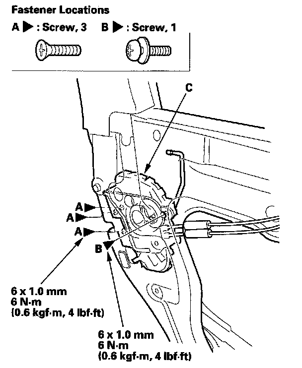
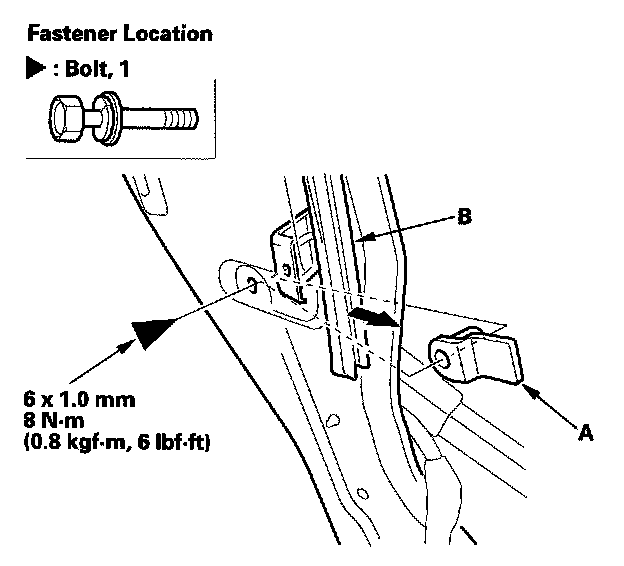
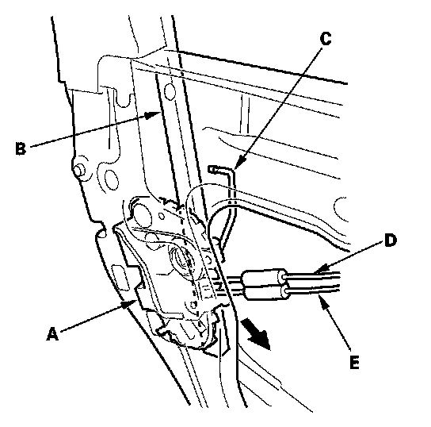
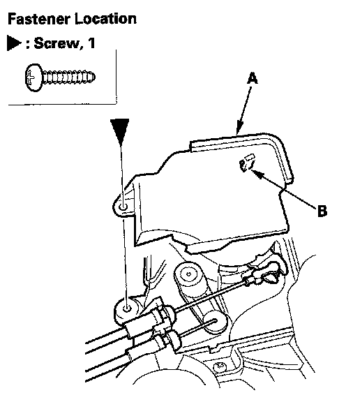
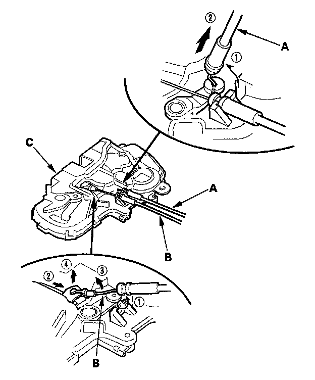

Rear Door Latch: Service and Repair
Rear Door Latch ReplacementNOTE: Put on gloves to protect your hands.
1. Raise the glass fully.
2. Remove the door panel.
3. Remove the plastic cover, as needed.

4. Remove the screws (A, B) securing the latch (C), then lower it.
5. Detach the rod fastener
6. Disconnect the outer handle rod from the outer handle

7. Remove the bolt, then remove the collar (A) from the rear lower channel (B).

8. Remove the latch (A) out from between the rear lower channel (B) and the door. Take care not to bend the outer handle rod (C), latch cable (D), and inner handle cable (E).

9. Remove the screw, then remove the latch protector (A) by releasing the hook (B).

10. Detach the latch cable (A) and the inner handle cable (B) from the latch (C).
11. Install the latch in the reverse order of removal, and note these items:
- Make sure the actuator connector is plugged in properly, and the outer handle rod is connected securely.
- Make sure the door locks and opens properly.